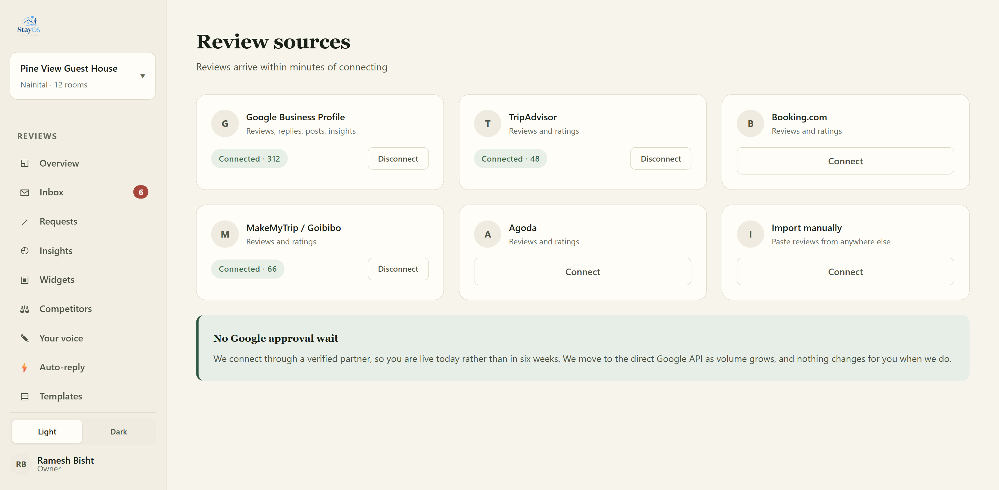
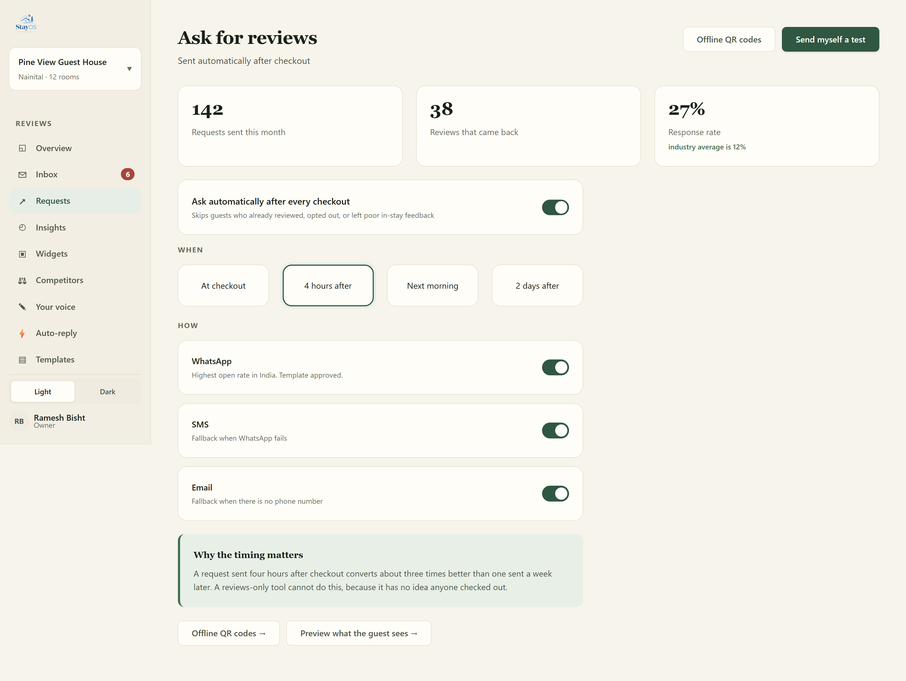
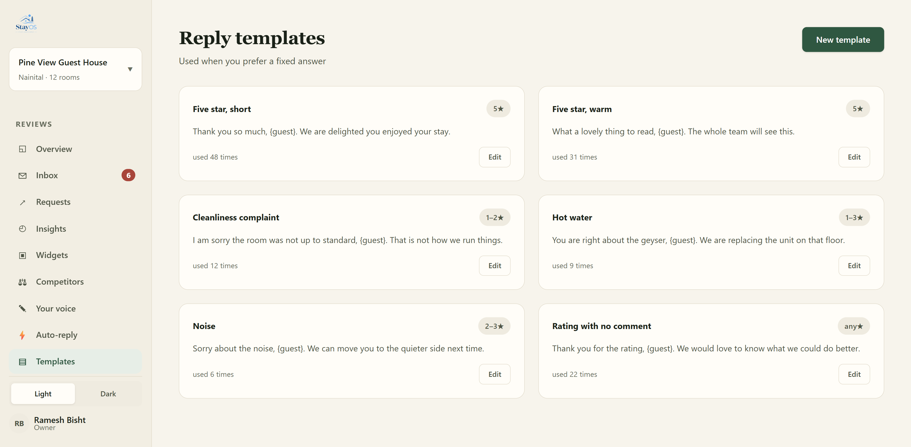
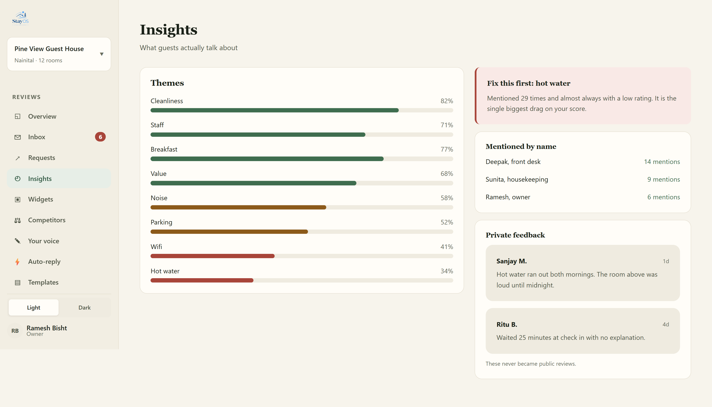
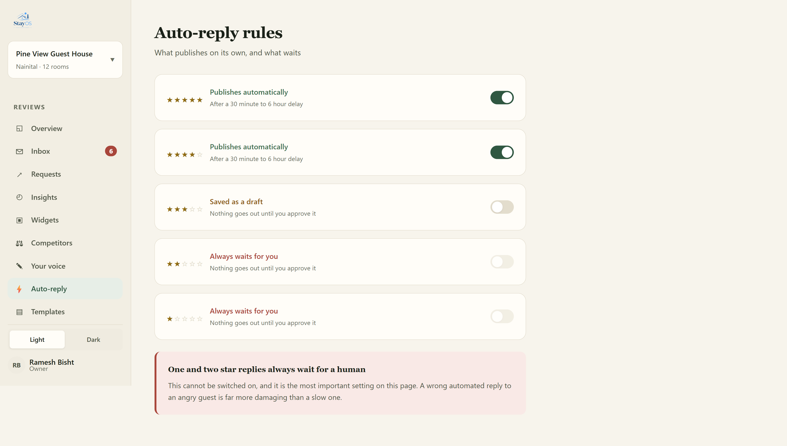
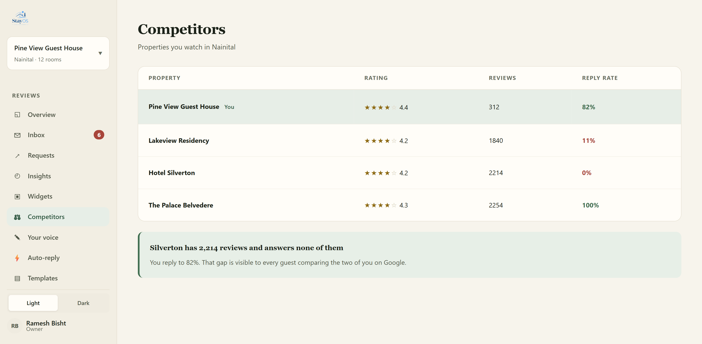
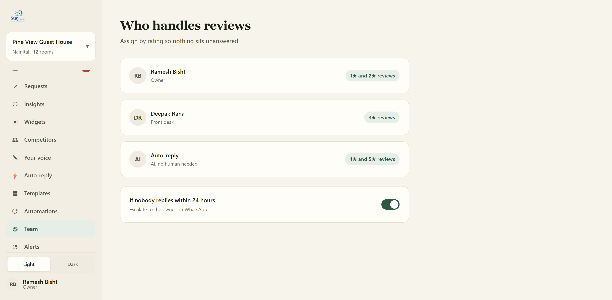
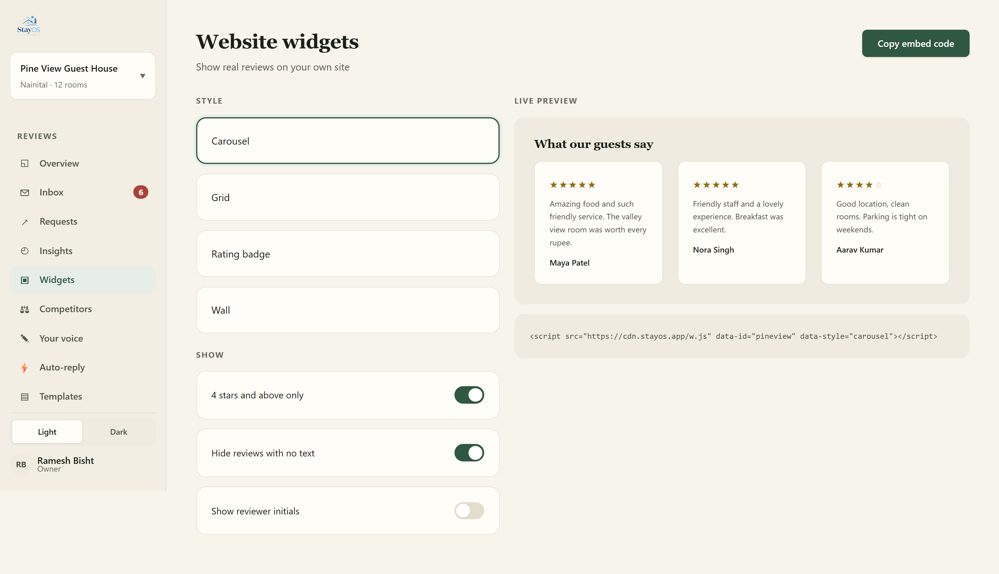

StayOS is the complete hotel review management software for modern hospitality. Unify guest feedback from every platform, reply faster and improve your online reputation — all from one operational hub.
Managing hotel reviews across Google, TripAdvisor, Booking.com and MakeMyTrip is time-consuming and fragmented. StayOS brings all your guest feedback into a single dashboard so you can respond to hotel reviews quickly, collect guest feedback proactively, and improve your hotel's online reputation without adding work to your front desk team.
Your reviews live on five different sites. Checking each one every day takes hours you don't have, and negative reviews go unnoticed until the damage is done.
Guests who leave a poor review and never get a reply share that experience with others. A slow response time signals that your hotel doesn't care about guest feedback.
Without aggregated data you can't see whether cleanliness, staff behaviour or check-in speed is driving your low ratings — so you can't fix the right things.
Reply rate achieved by StayOS users across all review platforms.
Median reply time for hotels using StayOS reply management.
Guest reviews currently tracked across all connected sources.
Review platforms connected: Google, TripAdvisor, Booking.com, MakeMyTrip and more.
Google, TripAdvisor, Booking.com, MakeMyTrip and more — all pulled into one continuous stream. Every review surfaces the moment it is posted, regardless of origin. No platform left behind, no review missed.
Get early access
Trigger WhatsApp, SMS or email follow-ups automatically after checkout. Reach guests when their experience is still fresh and increase your review volume without adding a single task to your front desk workflow.

Select a Warm, Brief or Formal tone and receive a contextually accurate draft reply in seconds. The AI reads the review, understands the complaint or compliment and writes a response that sounds human. Your staff just approves — so you can respond to hotel reviews faster than ever.

AI-analysed sentiment broken down by operational theme — cleanliness, staff behaviour, food quality, check-in speed. Spot systemic issues before they become reputation crises. Data that drives decisions, not just reports, so you can improve your online reputation continuously.

Configure automation rules that match your brand policy. Four and five-star reviews can auto-publish with the AI draft. One and two-star reviews always route to a human for approval. The system works the way your hotel already works.

Track how your ratings, reply rates and sentiment compare against local competitors. Understand where you lead and where you lag. Use data to justify investment in operations and strengthen your online reputation management strategy.

Assign roles and permissions across your property team. Owners see portfolio-level data. General Managers approve critical drafts. Front desk staff handle one-click approvals. Everyone sees exactly what they need — nothing more.

Showcase your best reviews directly on your hotel website. Curate which reviews appear, customise the layout and let your guests speak for you. Social proof that works around the clock without any manual effort.

Stop checking five separate platforms. One inbox for all your hotel reviews saves your team significant time each week.
Instant alerts when a low-rated review is posted mean you can respond to hotel reviews before they impact bookings.
A higher reply rate and faster response time directly improves your ranking on booking platforms and your overall online reputation.
Understand exactly what guests complain about most — and fix it — with AI-powered sentiment analysis across all your guest feedback.
Portfolio-level ROI view. Track overall brand sentiment, identify underperforming properties, and measure the financial impact of reputation improvements across your entire group.
Approve critical reply drafts, spot operational bottlenecks surfaced by guest feedback, and ensure your team maintains brand standards across every single response to hotel reviews.
One-click approvals for AI-generated reply drafts. No more struggling to find the right words for an unhappy guest at 2 AM. StayOS handles the language; your staff handles the empathy.
Link Google, TripAdvisor, Booking.com and other platforms in minutes. All your hotel reviews appear in one unified inbox.
StayOS generates contextual reply drafts instantly. Your team selects a tone, reviews the draft and publishes — all in seconds.
Use the insights dashboard to spot trends in guest feedback, fix recurring issues and watch your online reputation improve over time.
Hotel review management software is a platform that collects guest reviews from multiple booking and travel sites — such as Google, TripAdvisor and Booking.com — into one dashboard. It helps hotel teams respond to hotel reviews promptly, analyse guest feedback trends and improve their online reputation without switching between multiple platforms.
StayOS currently supports Google, TripAdvisor, Booking.com, MakeMyTrip and additional platforms. We are continuously adding new integrations based on feedback from our waitlist. Sign up to get notified when your preferred platform is available.
StayOS improves your online reputation in three ways: it ensures no review goes unanswered (higher reply rates are rewarded by booking platforms), it helps you reply faster with AI-generated drafts, and it surfaces recurring issues in guest feedback so you can fix the root cause — not just the symptom.
Yes. StayOS is designed to work for single-property independent hotels, boutique properties and large hotel groups. Owners of chains get a portfolio-level view; single property managers get the full operational toolkit. Role-based access means everyone on your team sees exactly what they need.
StayOS is currently in early access. Join the waitlist today and you will be among the first to be notified when we go live. Early access members also get the opportunity to shape the product through direct feedback sessions with the StayOS team.
Join the hotels that will use StayOS to transform their review management and improve their online reputation.
Get Early Access ↗